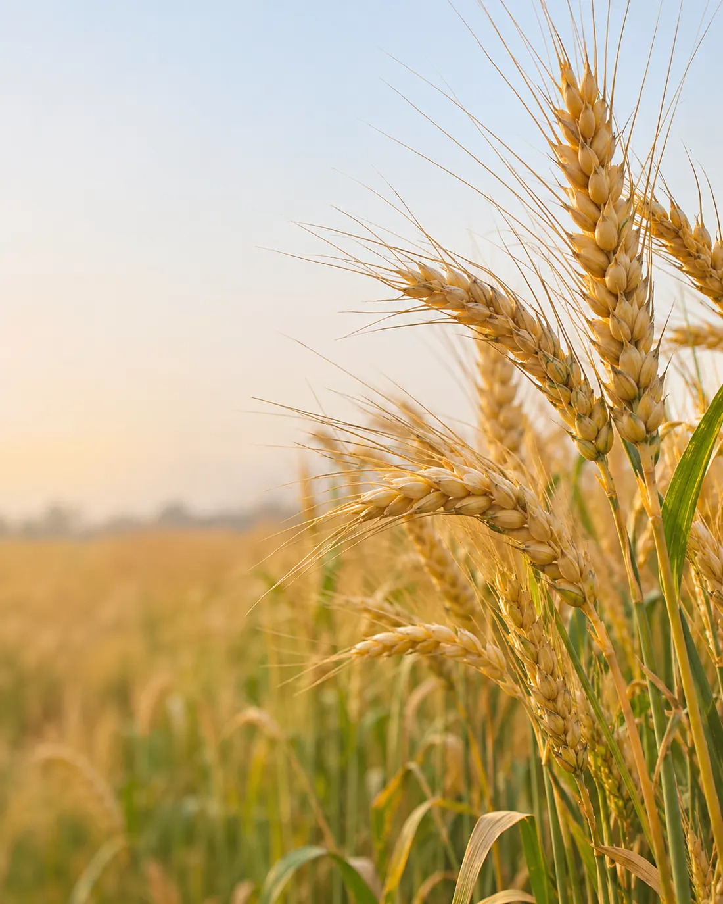

Milled in small batchesDelivered weekly

Ours is milled slowly on natural stone. Fresh, every week.
Order fresh attaSee packs and prices Freshly milled, delivered weeklyWe keep changing everything around us. Our skincare, our cooking oil, even our utensils, because we research what is best for our family. So why don't we stop and think about our atta? Its quality, where it comes from, how it is made. We just take their word for it.
Isse kisi ne poocha?Veer, who asks the questions
Four things, every batch.